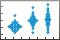

swarmchart
Swarm scatter chart
- 
Syntax
Description
Vector and Matrix Data
swarmchart(
displays a swarm chart, which is a scatter plot with the points offset (jittered) in the
x,y)x-dimension. The points form distinct shapes, and the outline of each
shape is similar to a violin plot. Swarm charts help you to visualize discrete
x data with the distribution of the y data. At
each location in x, the points are jittered based on the kernel density
estimate of y.
To plot one set of points, specify
xandyas vectors of equal length.To plot multiple sets of points on the same set of axes, specify at least one of
xoryas a matrix.
swarmchart(___, specifies a
different marker than the default marker, which is a circle. Specify
mkr)mkr after all the arguments in any of the previous syntaxes.
Table Data
swarmchart(
plots the variables tbl,xvar,yvar)xvar and yvar from the table
tbl. To plot one data set, specify one variable for
xvar and one variable for yvar. To plot multiple
data sets, specify multiple variables for xvar,
yvar, or both. If both arguments specify multiple variables, they must
specify the same number of variables.
Additional Options
swarmchart( displays the
swarm chart in the target axes. Specify the axes before all the arguments in any of the
previous syntaxes.ax,___)
swarmchart(___,
specifies additional properties for the swarm chart using one or more name-value
arguments. Specify the properties after all other input arguments. For example:Name,Value)
swarmchart(x,y,'LineWidth',2)creates a swarm chart with 2-point marker outlines.swarmchart(tbl,'MyX','MyY','ColorVariable','MyColors')creates a swarm chart from data in a table, and customizes the marker colors using data from the table.swarmchart(x,y,'YJitter','density')creates a horizontal swarm chart. (since R2023b)
For a list of properties, see Scatter Properties.
s = swarmchart(___) returns the
Scatter object or an array of Scatter objects. Use
s to modify properties of the chart after creating it. For a list of
properties, see Scatter Properties.
Examples
Create a vector of x coordinates, and use the randn function to generate normally distributed random values for y. Then create a swarm chart of x and y.
x = [ones(1,500) 2*ones(1,500) 3*ones(1,500)]; y1 = 2 * randn(1,500); y2 = 3 * randn(1,500) + 5; y3 = 5 * randn(1,500) + 5; y = [y1 y2 y3]; swarmchart(x,y)

Create three sets of x and y coordinates. Use the randn function to generate random values for y.
x1 = ones(1,500); x2 = 2 * ones(1,500); x3 = 3 * ones(1,500); y1 = 2 * randn(1,500); y2 = [randn(1,250) randn(1,250) + 4]; y3 = 5 * randn(1,500) + 5;
Create a swarm chart of the first data set, and specify a uniform marker size of 5. Then call hold on to plot the second and third data sets together with the first data set. Call hold off to release the hold state of the axes.
swarmchart(x1,y1,5) hold on swarmchart(x2,y2,5) swarmchart(x3,y3,5) hold off

Read the BicycleCounts.csv data set into a timetable called tbl. This data set contains bicycle traffic data over a period of time. Display the first five rows of tbl.
tbl = readtable("BicycleCounts.csv");
tbl(1:5,:)ans=5×5 table
Timestamp Day Total Westbound Eastbound
___________________ _____________ _____ _________ _________
2015-06-24 00:00:00 {'Wednesday'} 13 9 4
2015-06-24 01:00:00 {'Wednesday'} 3 3 0
2015-06-24 02:00:00 {'Wednesday'} 1 1 0
2015-06-24 03:00:00 {'Wednesday'} 1 1 0
2015-06-24 04:00:00 {'Wednesday'} 1 1 0
Create a vector x with the day name from each observation, and another vector y with the bicycle traffic observed. Then create a swarm chart of x and y, and specify the point marker ('.'). The chart shows the distribution of bicycle traffic according to the day of the week.
daynames = ["Sunday" "Monday" "Tuesday" "Wednesday" "Thursday" "Friday" "Saturday"]; x = categorical(tbl.Day,daynames); y = tbl.Total; swarmchart(x,y,'.');

Read the BicycleCounts.csv data set into a timetable called tbl. Create a vector x with the day name for each observation, another vector y with the bicycle traffic observed, and a third vector c with the hour of the day.
Then create a swarm chart of x and y, and specify the marker size as 20. Specify the colors of the markers as vector c. The values in the vector index into the figure's colormap. Thus, the colors change according to the hour for each data point. Use the 'filled' option to fill the markers with color instead of displaying them as hollow circles.
tbl = readtable("BicycleCounts.csv"); daynames = ["Sunday" "Monday" "Tuesday" "Wednesday" "Thursday" "Friday" "Saturday"]; x = categorical(tbl.Day,daynames); y = tbl.Total; c = hour(tbl.Timestamp); swarmchart(x,y,20,c,'filled');

Read the BicycleCounts.csv data set into a timetable called tbl. Create a vector x with the day name for each observation, another vector y with the bicycle traffic observed, and a third vector c with the hour of the day. Then create a swarm chart of x and y, and specify the marker size as 5, and the colors of the markers as vector c. Call the swarmchart function with the return argument s, so that you can modify the chart after creating it.
tbl = readtable("BicycleCounts.csv"); daynames = ["Sunday" "Monday" "Tuesday" "Wednesday" "Thursday" "Friday" "Saturday"]; x = categorical(tbl.Day,daynames); y = tbl.Total; c = hour(tbl.Timestamp); s = swarmchart(x,y,5,c);

Change the shapes of the clusters at each x location, so that the points are uniformly and randomly distributed and the spacing is limited to no more than 0.5 data units.
s.XJitter = 'rand';
s.XJitterWidth = 0.5;
Since R2023b
You can create a horizontal swarm chart by setting the YJitter property when you call the swarmchart function.
For example, create three normal distributions of 500 numbers and a categorical vector of town names. Then create a horizontal swarm chart of the data by calling the swarmchart function and specifying the YJitter name-value argument.
x = randn(500,3) + [1 4 6]; towns = categorical(["Stowe" "Wayland" "Natick"]); y = repmat(towns,500,1); swarmchart(x,y,YJitter="density")

Create a pair of x and y coordinates. Use the randn function to generate random values for y. Then create a swarm chart with filled markers that are 50% transparent both on their faces and on their edges.
x1 = ones(1,500); x2 = 2 * ones(1,500); x = [x1 x2]; y1 = 2 * randn(1,500); y2 = [randn(1,250) randn(1,250) + 4]; y = [y1 y2]; swarmchart(x,y,'filled','MarkerFaceAlpha',0.5,'MarkerEdgeAlpha',0.5)

A convenient way to plot data from a table is to pass the table to the swarmchart function and specify the variables you want to plot. For example, create a table with three variables of random numbers, and plot the X and Y1 variables. By default, the axis labels match the variable names.
tbl = table(randi(2,100,1),randn(100,1),randn(100,1)+10, ... 'VariableNames',{'X','Y1','Y2'}); swarmchart(tbl,'X','Y1')

You can also plot multiple variables at the same time. For example, plot the Y1 and Y2 variables on the y-axis by specifying the yvar argument as the cell array {'Y1','Y2'}. Then add a legend. The legend labels match the variable names.
swarmchart(tbl,'X',{'Y1','Y2'}) legend

One way to plot data from a table and customize the colors and marker sizes is to set the ColorVariable and SizeData properties. You can set these properties as name-value arguments when you call the swarmchart function, or you can set them on the Scatter object later.
For example, create a table with three variables of random numbers, and plot the X and Y variables with filled markers. Vary the marker colors by specifying the ColorVariable name-value argument. Return the Scatter object as s, so you can set other properties later.
tbl = table(randi(2,100,1),randn(100,1),randn(100,1), ... 'VariableNames',{'X','Y','Colors'}); s = swarmchart(tbl,'X','Y','filled','ColorVariable','Colors');

Change the marker sizes to 100 points by setting the SizeData property.
s.SizeData = 100;

Read the BicycleCounts.csv data set into a timetable called tbl. This data set contains bicycle traffic data over a period of time. Display the first five rows of tbl.
tbl = readtable("BicycleCounts.csv");
tbl(1:5,:)ans=5×5 table
Timestamp Day Total Westbound Eastbound
___________________ _____________ _____ _________ _________
2015-06-24 00:00:00 {'Wednesday'} 13 9 4
2015-06-24 01:00:00 {'Wednesday'} 3 3 0
2015-06-24 02:00:00 {'Wednesday'} 1 1 0
2015-06-24 03:00:00 {'Wednesday'} 1 1 0
2015-06-24 04:00:00 {'Wednesday'} 1 1 0
Define x as a categorical array of the day names in the table. Define yEast and yWest as vectors containing the eastbound and westbound bicycle traffic counts.
daynames = ["Sunday" "Monday" "Tuesday" "Wednesday" "Thursday" "Friday" "Saturday"]; x = categorical(tbl.Day,daynames); yEast = tbl.Eastbound; yWest = tbl.Westbound;
Create a tiled chart layout in the 'flow' tile arrangement, so that the axes fill the available space in the layout. Call the nexttile function to create an axes object and return it as ax1. Then create a swarm chart of the eastbound data by passing ax1 to the swarmchart function.
tiledlayout('flow') ax1 = nexttile; y = tbl.Eastbound; swarmchart(ax1,x,y,'.')

Repeat the process to create a second axes object and a swarm chart for the westbound traffic.
ax2 = nexttile;
y = tbl.Westbound;
swarmchart(ax2,x,y,'.')
Input Arguments
x-coordinates, specified as a scalar, vector, or matrix. The size
and shape of x depends on the shape of your data. This table
describes the most common situations.
| Type of Plot | How to Specify Coordinates |
|---|---|
| Single point | Specify swarmchart(1,1) |
| One set of points | Specify x = randi(3,100,1); y = randn(1,100); swarmchart(x,y) |
| Multiple sets of points that are different colors | If all the sets share the same x- or y-coordinates, specify the shared coordinates as a vector and the other coordinates as a matrix. The length of the vector must match one of the dimensions of the matrix. For example: x = randi(2,1,100); y = [randn(100,1) randn(100,1)+5]; swarmchart(x,y,100) swarmchart plots a separate set
of points for each column in the matrix.Alternatively, specify
x = randi(2,100,2); y = [randn(100,1) randn(100,1)+5]; swarmchart(x,y,100) |
Data Types: single | double | int8 | int16 | int32 | int64 | uint8 | uint16 | uint32 | uint64 | categorical
y-coordinates, specified as a scalar, vector, or matrix. The size
and shape of y depends on the shape of your data. This table
describes the most common situations.
| Type of Plot | How to Specify Coordinates |
|---|---|
| Single point | Specify swarmchart(1,1) |
| One set of points | Specify x = randi(3,100,1); y = randn(1,100); swarmchart(x,y) |
| Multiple sets of points that are different colors | If all the sets share the same x- or y-coordinates, specify the shared coordinates as a vector and the other coordinates as a matrix. The length of the vector must match one of the dimensions of the matrix. For example: x = randi(2,1,100); y = [randn(100,1) randn(100,1)+5]; swarmchart(x,y,100) swarmchart plots a separate set
of points for each column in the matrix.Alternatively, specify
x = randi(2,100,2); y = [randn(100,1) randn(100,1)+5]; swarmchart(x,y,100) |
Data Types: single | double | int8 | int16 | int32 | int64 | uint8 | uint16 | uint32 | uint64 | categorical | datetime | duration
Marker size, specified as a numeric scalar, vector, matrix, or empty array
([]). The size controls the area of each marker in points squared.
An empty array specifies the default size of 36 points. The way you specify the size
depends on how you specify x and y, and how you
want the plot to look. This table describes the most common situations.
| Desired Marker Sizes | x and y
| sz | Example |
|---|---|---|---|
Same size for all points | Any valid combination of vectors or matrices described for
| Scalar | Specify x = randi(2,1,100); y = randn(100,1); swarmchart(x,y,100) |
Different size for each point | Vectors of the same length |
| Specify x = randi(2,1,100); y = randn(100,1); sz = randi([70 2000],100,1); swarmchart(x,y,sz) Specify
x = randi(2,1,100); y = randn(100,1); sz = randi([70 2000],100,2); swarmchart(x,y,sz) |
Different size for each point | At least one of |
| Specify x = randi(2,1,100); y = [randn(100,1) randn(100,1)+5]; sz = randi([70 2000],100,1); swarmchart(x,y,sz) Specify
x = randi(2,1,100); y = [randn(100,1) randn(100,1)+5]; sz = randi([70 2000],100,2); swarmchart(x,y,sz) |
Marker color, specified as a color name, RGB triplet, matrix of RGB triplets, or a vector of colormap indices.
Color name — A color name such as
'red', or a short name such as'r'.RGB triplet — A three-element row vector whose elements specify the intensities of the red, green, and blue components of the color. The intensities must be in the range
[0,1]; for example,[0.4 0.6 0.7]. RGB triplets are useful for creating custom colors.Matrix of RGB triplets — A three-column matrix in which each row is an RGB triplet.
Vector of colormap indices — A vector of numeric values that is the same length as the
xandyvectors.
The way you specify the color depends on the desired color scheme and whether you are plotting one set of coordinates or multiple sets of coordinates. This table describes the most common situations.
| Color Scheme | How to Specify the Color | Example |
|---|---|---|
Use one color for all the points. | Specify a color name or a short name from the table below, or specify one RGB triplet. | Plot one set of points, and specify the color as
x = randi(2,1,100);
y = randn(100,1);
c = 'red';
swarmchart(x,y,[],c)Plot two sets of points, and specify the color as red using an RGB triplet. x = randi(2,1,100); y = randn(100,1); c = [0.6 0 0.9]; swarmchart(x,y,[],c) |
Assign different colors to each point using a colormap. | Specify a row or column vector of numbers. The numbers index into the current colormap array. The smallest value maps to the first row in the colormap, and the largest value maps to the last row. The intermediate values map linearly to the intermediate rows. If your plot has three points, specify a column vector to ensure the values are interpreted as colormap indices. You can use this method only when
| Create a vector x = randi(2,1,100);
y = randn(100,1);
c = 1:100;
swarmchart(x,y,[],c)
colormap(gca,'winter') |
Create a custom color for each point. | Specify an m-by-3 matrix of RGB triplets, where m is the number of points in the plot. You can use this method only when
| Create a matrix x = randi(2,1,100); y = randn(100,1); c = rand(100,3); swarmchart(x,y,[],c) |
Create a different color for each data set. | Specify an n-by-3 matrix of RGB triplets, where n is the number of data sets. You can use this method only when at least one of
| Create a matrix x = randi(2,100,2); y = [randn(100,1) randn(100,1)+5]; c = [1 0 0; 0 0 1]; swarmchart(x,y,[],c) |
Color Names and RGB Triplets for Common Colors
| Color Name | Short Name | RGB Triplet | Hexadecimal Color Code | Appearance |
|---|---|---|---|---|
"red" | "r" | [1 0 0] | "#FF0000" |
|
"green" | "g" | [0 1 0] | "#00FF00" |
|
"blue" | "b" | [0 0 1] | "#0000FF" |
|
"cyan"
| "c" | [0 1 1] | "#00FFFF" |
|
"magenta" | "m" | [1 0 1] | "#FF00FF" |
|
"yellow" | "y" | [1 1 0] | "#FFFF00" |
|
"black" | "k" | [0 0 0] | "#000000" |
|
"white" | "w" | [1 1 1] | "#FFFFFF" |
|
This table lists the default color palettes for plots in the light and dark themes.
| Palette | Palette Colors |
|---|---|
Before R2025a: Most plots use these colors by default. |
|
|
|
You can get the RGB triplets and hexadecimal color codes for these palettes using the orderedcolors and rgb2hex functions. For example, get the RGB triplets for the "gem" palette and convert them to hexadecimal color codes.
RGB = orderedcolors("gem");
H = rgb2hex(RGB);Before R2023b: Get the RGB triplets using RGB =
get(groot,"FactoryAxesColorOrder").
Before R2024a: Get the hexadecimal color codes using H =
compose("#%02X%02X%02X",round(RGB*255)).
Marker type, specified as one of the values listed in this table.
| Marker | Description | Resulting Marker |
|---|---|---|
"o" | Circle |
|
"+" | Plus sign |
|
"*" | Asterisk |
|
"." | Point |
|
"x" | Cross |
|
"_" | Horizontal line |
|
"|" | Vertical line |
|
"square" | Square |
|
"diamond" | Diamond |
|
"^" | Upward-pointing triangle |
|
"v" | Downward-pointing triangle |
|
">" | Right-pointing triangle |
|
"<" | Left-pointing triangle |
|
"pentagram" | Pentagram |
|
"hexagram" | Hexagram |
|
Option to fill the interior of the markers, specified as
'filled'. Use this option with markers that have a face, for example,
'o' or 'square'. Markers that do not have a face
and contain only edges do not render at all ('+',
'*', '.', and 'x').
The 'filled' option sets the MarkerFaceColor
property of the Scatter object to
'flat' and the MarkerEdgeColor property to
'none'. In this case, MATLAB® draws the marker faces, but not the edges.
Source table containing the data to plot, specified as a table or a timetable.
Table variables containing the x-coordinates, specified as one or more table variable indices.
Specifying Table Indices
Use any of the following indexing schemes to specify the desired variable or variables.
| Indexing Scheme | Examples |
|---|---|
Variable names:
|
|
Variable index:
|
|
Variable type:
|
|
Plotting Your Data
The table variables you specify can contain numeric or categorical values.
To plot one data set, specify one variable for xvar and one
variable for yvar. For example, create a table with three variables
of normally distributed random values. Plot the X1 and
Y
variables.
tbl = table(randn(100,1),randn(100,1)+10,randn(100,1), ... 'VariableNames',{'X1','X2','Y'}); swarmchart(tbl,'X1','Y')
To plot multiple data sets together, specify multiple variables for
xvar, yvar, or both. If you specify multiple
variables for both arguments, the number of variables for each argument must be the
same.
For example, plot the X1 and X2 variables on
the x-axis and the Y variable on the
y-axis.
swarmchart(tbl,{'X1','X2'},'Y')You can also use different indexing schemes for xvar and
yvar. For example, specify xvar as a variable
name and yvar as an index
number.
swarmchart(tbl,'X1',3)Table variables containing the y-coordinates, specified as one or more table variable indices.
Specifying Table Indices
Use any of the following indexing schemes to specify the desired variable or variables.
| Indexing Scheme | Examples |
|---|---|
Variable names:
|
|
Variable index:
|
|
Variable type:
|
|
Plotting Your Data
The table variables you specify can contain numeric, categorical, datetime, or duration values.
To plot one data set, specify one variable for xvar and one
variable for yvar. For example, create a table with three variables
of normally distributed random values. Plot the X1 and
Y
variables.
tbl = table(randn(100,1),randn(100,1)+10,randn(100,1), ... 'VariableNames',{'X1','X2','Y'}); swarmchart(tbl,'X1','Y')
To plot multiple data sets together, specify multiple variables for
xvar, yvar, or both. If you specify multiple
variables for both arguments, the number of variables for each argument must be the
same.
For example, plot the X1 and X2 variables on
the x-axis and the Y variable on the
y-axis.
swarmchart(tbl,{'X1','X2'},'Y')You can also use different indexing schemes for xvar and
yvar. For example, specify xvar as a variable
name and yvar as an index
number.
swarmchart(tbl,'X1',3)Target axes, specified as an Axes object, a
PolarAxes object, or a GeographicAxes object. If
you do not specify the axes, MATLAB plots into the current axes, or it creates an Axes
object if one does not exist.
Name-Value Arguments
Algorithms
The points in a swarm chart are jittered using uniform random values that are weighted by
the Gaussian kernel density estimate of y and the relative number of points
at each x location. This behavior corresponds to the default
'density' setting of the XJitter property on the
Scatter object when you call the swarmchart
function.
The maximum spread of points at each x
location is 90% of the smallest distance between adjacent x values by
default:
spread = 0.9 * min(diff(unique(x)));
You can control the spread by setting the XJitterWidth property of
the Scatter object.
Horizontal swarm charts are jittered using the same algorithm, but the points are jittered
along the y dimension using the Gaussian kernel density estimate of
x. In this case, you control the spread using the
YJitterWidth property.
Version History
Introduced in R2020bWhen you pass a table and one or more variable names to the swarmchart function, the axis and legend labels now display any special characters that are included in the table variable names, such as underscores. Previously, special characters were interpreted as TeX or LaTeX characters.
For example, if you pass a table containing a variable named Sample_Number
to the swarmchart function, the underscore appears in the axis and
legend labels. In R2022a and earlier releases, the underscores are interpreted as
subscripts.
| Release | Label for Table Variable "Sample_Number" |
|---|---|
R2022b |
|
R2022a |
|
To display axis and legend labels with TeX or LaTeX formatting, specify the labels manually.
For example, after plotting, call the xlabel or
legend function with the desired label strings.
xlabel("Sample_Number") legend(["Sample_Number" "Another_Legend_Label"])